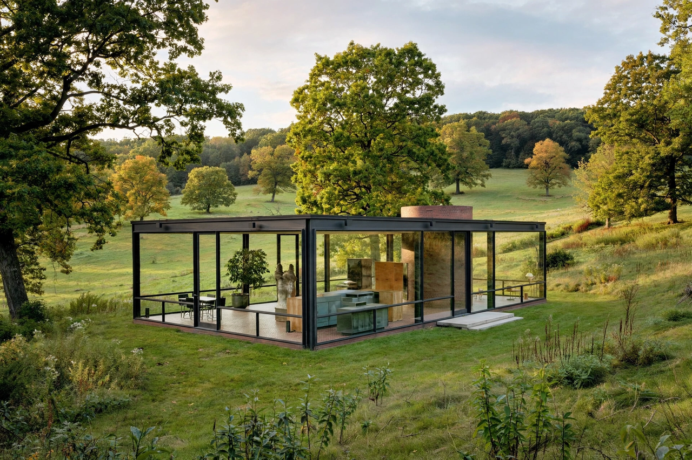

| Philip Johnson | |
|---|---|
 Johnson's Glass House, New Canaan (1949) | |
| Born | 8 July 1906, Cleveland, Ohio, U.S. |
| Died | 25 January 2005 (aged 98), New Canaan, Connecticut |
| Occupation | Architect |
| Key works | Glass House; Seagram Building (with Mies van der Rohe); AT&T Building; Crystal Cathedral |
| Awards | First Pritzker Architecture Prize (1979) |
Philip Cortelyou Johnson (July 8, 1906 – January 25, 2005) was an American architect who designed modern and postmodern architecture. Among his best-known designs are his Glass House in New Canaan, the Seagram Building (designed with Mies van der Rohe), the postmodern AT&T Building in New York, and the Crystal Cathedral in California. Before practising architecture he was the founding director of the Museum of Modern Art's Department of Architecture and Design, and with Henry-Russell Hitchcock he curated the landmark 1932 exhibition that introduced the "International Style" to America.
Johnson studied architecture at Harvard's Graduate School of Design in his thirties. His Glass House (1949), a transparent pavilion on his New Canaan estate, became an icon of modernism. He later moved through phases of monumental classicism, and in 1978–1984 designed the AT&T Building in New York — with its granite cladding and broken pediment "Chippendale" top — which became a defining monument of postmodernism. In 1979 he became the first recipient of the Pritzker Architecture Prize.
Johnson's reputation is complicated by his political activities in the 1930s, when he admired Nazi Germany, wrote sympathetic articles about the regime, and attempted to found a fascist political movement in the United States; he later renounced these views. The revelations have prompted institutions and critics to reassess his legacy.